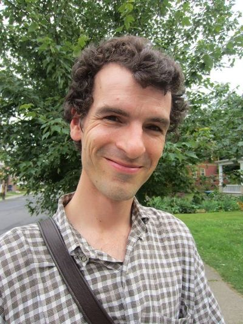

Who was the first person you've met that you knew that he/she was meditating?
I think that the first people that I met that were involved in meditation were my mother's sister and her husband. I started to pay attention to that when I was 12 or 13. My uncle is a Buddhist and a martial artist and a certain inner discipline and attentiveness was evident to me while spending time with him. I wouldn't have been able to speak articulately about what I was experiencing of course. My aunt is a poet and a great lover of nature. I was aware that she cultivated some kind of a spiritual dimension in herself in relationship to the love of nature.
My father also made me aware of contemplative work and meditation. He practices prayer. He is Christian, though he not doesn't really participate in community celebrations or liturgies. He regularly takes time to be silent, to pray and to direct his attention towards something that he feels is extremely significant in his life.
Why did you choose Anthroposophy as the basis for your work?
When I was in my teens I became interested in meditation, in part because of the kind of culture in America at that time. I mean spiritual or new-age literature, when I was a teenager, was all over the place. In the suburban city culture of postmodern and post-industrial America, there is an intense search for meaning. The use of drugs and experimenting with spirituality and practices from different places are not uncommon. Of course this can lead to dramatic experiences that shake one’s sense of reality. I had experiences that forced me into existential dilemmas. I was around 14, ransacking my school library looking for books by people who could speak first hand about spiritual experience. It became an absolute necessity for me to start taking hold of my inner life. In my initial search I found a lot of descriptive literature. I eventually found practical works that were more helpful. They were mostly inspired by Buddhist meditation practices. I also attended yoga classes from the age of 14 and I remember getting my hands on the Bhagavad Gita and reading it through.
I was about 17 when a friend gave me a book by Rudolf Steiner. Steiner came across as an intellectual. I wasn't sure if he was writing about experiences he had or traditions and conventions. When I was 19, I ended up getting my hands on The Philosophy of Freedom. I had an experience, one would call it a spiritual experience, even though The Philosophy of Freedom is not a mystical work. This connection of spiritual experience and philosophy interested me deeply.
I was 19 with no commitments and I wanted to learn more. I had heard of a kind of school in Switzerland, a Goetheanum. I had about $500 and I got a one way ticket. I didn't know if I would stay there or travel in Europe. I ended up staying for about five years and studying there. I studied visual art and some theater.
Maybe that answers the question of how I became introduced, but why it's become central to my practice, is still something else. One of the appeals of anthroposophical practice is the cultivation of experience toward knowledge and wisdom. The fundamental orientation is an interest in all the varieties of human and worldly experience. Through contemplative practices a kind of knowledge, and perception develops that differs from intellectual understanding. This is an expansion empiricism. Steiner experimented and pioneered engagements with attitudes and practices, so that real (though subtle) aspects of experience could become more palpable and evident, and unknown experiences could be explored.
Expanding empiricism toward the spiritual is very, of course, very ambitious. In America: William James, one of our greatest thinkers, at the end of his life had a major spiritual, intellectual turn in this direction. He gave his lectures, a Pluralistic Universe, and pointed toward the necessity that practices like these be explored, of the need of a Radical Empiricism. The end of the lectures is a moving call to the coming generations in this regard.
What is the uniqueness of anthroposophic meditation, for you?
A 100 years ago the expansive and inspired activity of Rudolf Steiner and many co-workers gave fresh impetus to many cultural practices that had become under appreciated, and developed new ones. Many practices were native to middle Europe, but were displaced by the naturalistic conventions originating primarily in England that have become the status quo today.
While the variety is so great it is hard to generalize some things stand out. There are practices focus on visualization, inner picturing, through working with memories and cultivating very intense imaginative experiences.
One effect that is taught is that a point will arrive when you will have experiences of images that do not correspond with what is physically present. At this point you will become aware of certain parts of yourself that are usually unconscious. They appear to you in troubling ways and demand honesty, courage and humility to face. These experiences are taught as an event, they are not conceived as a symbol or an abstract teaching. This points to a sobriety and honesty in relationship our nature, which takes into account the egotistical and evil-impulses and tries to responsibly bring them into consciousness and to work with them.
Why do you meditate?
That's a great question. As I've already mentioned, for me, personally, it was something of a necessity that was just introduced into my life. If I hadn't started to meditate, I don't know what would've become of me, really. But there is more to this. The people that I felt were most sensitive and awake were emphatic that meditation should be directed towards the greater good of all that exists. One of the pathologies you can get trapped in when you begin to meditate is a kind of spiritual egotism, where you get fascinated with the meditative experiences such as ecstasy and bliss. When you begin to meditate you can orient yourself with the thought ‹I am now engaging in this practice and everything that I am going to do now, it is my hope that it be of a wider benefit for humanity and other beings at large.›
Do you have advice for someone who would like to begin to meditate?
In Benjamin Franklin's autobiography one finds the remark that it makes as much sense to tell people to be good as it does to walk up to poor people that are hungry and tell them to be fed. The question is, how do you get food? You have to actually show how you get food in order to help people deal with hunger and the same is true with goodness and spiritual development. All the people that go around preaching moralism miss the real, and most difficult, question, which is, how do you become good?
Franklin went through the literature on the virtues and narrowed them down to 13 and ordered them, from easiest to the most difficult. He devised a system whereby he would practice for 13 weeks. The first week, he would only practice the virtue of Temperance, defined as: ‹Eat not to dullness; drink not to elevation›. He wanted no confusion on whether he succeeded. He knew exactly if he had eaten so much that he felt heavy or had too much alcohol and was feeling a little tipsy. Every evening he reviewed his day and marked down the instances where he failed in his intentions. During the first week, he would only strive for the first virtue, and he didn't worry about the other 12.
During the second week, he continued with temperance, and he added Silence, which he described as ‹speak not but what may benefit others or yourself; Avoid trifling Conversation.› Then, for that week, he would pursue these two virtues, on the third week, he would practice three, etc…. On the thirteenth week he practiced thirteen virtues. The last virtue was to imitate Jesus and Socrates, which is, first in difficulty and most obscure. He could go through this cycle four times a year and he had a little book where he took notes and made marks of how successful he was each time he did it.
The lesson of all this is that if you would like to build up a practice start with goals that you can achieve and build on them. Things take time and have a certain order to them. Suggestions are easy to find in books on meditation that have been explored by different contemplatives.